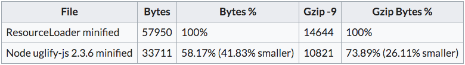

Better minification for the frontend sources
Intro
MediaWiki via ResourceLoader uses JavaScriptMinifier to minimize JavaScript files so that their size is as small as possible.
Since the minification happens in the PHP server at runtime, even with a read through cache tradeoffs were made so that the server could minify in a performant way, giving up size gains for speed.
The JavaScript ecosystem has continued evolving minifiers based on Node.js tooling that can’t be used on a PHP server easily.
There are gains to be had if we were to use node based minifiers and just give the smallest possible bundle to ResourceLoader for serving.
Requirements
Payload served can to users (specifically, JavaScript files), should be as small as possible.
Solution
Given we have introduced a build step previously, the solution seemed pretty straightforward.
We discussed we would introduce a minification step as part of the build
process, and then the committed assets in /resources/dist would be minified
and as small as possible.
We first did research and got numbers to check if there would actually be any gains and if it would be worth it. You can read about it here:
- Architecture design record 8. Enable minification of bundle with UglifyJS
- mediawiki.org: Extension:Popups/Minifying assets with uglifyjs

Then researched how to best introduce the minifier. As a standalone CLI we could
run it in our now single index.js file, but if we leveraged other bundler
features like multiple entry points or code splitting then the minification
commands could become very complex.
As such, we chose to integrate the minifier as a plugin to the webpack bundler. See uglifyjs-webpack-plugin.
Results
We added UglifyJS minification via Webpack (config).
Minifying via UglifyJS brought the bundle size down from the previous version ~40%, gzipped ~25%.
Also, theoretically, with EcmaScript modules webpack with uglify can perform tree shaking of unused code. Webpack will mark unused exports which would then be removed in the production bundle by uglify. See the guide Tree shaking.
Problems
Initially we had to do some research to instruct ResourceLoader to not apply minification to this already minified files. What we wanted was to avoid it so that the source maps comment would be preserved, and then we would have source maps on the production version of the code.
In the end, we had to give up, and ended up removing the banner as it interfered with the minification of other modules in production, but we still have source maps in development.
Conclusions
This was a pretty straight forward addition that brought us benefits with little cost. It was enabled by the change to introduce a build step.
The gain in size is not super significant given how small the JS code base is, but if applied to bigger code bases we could get great improvements for free.